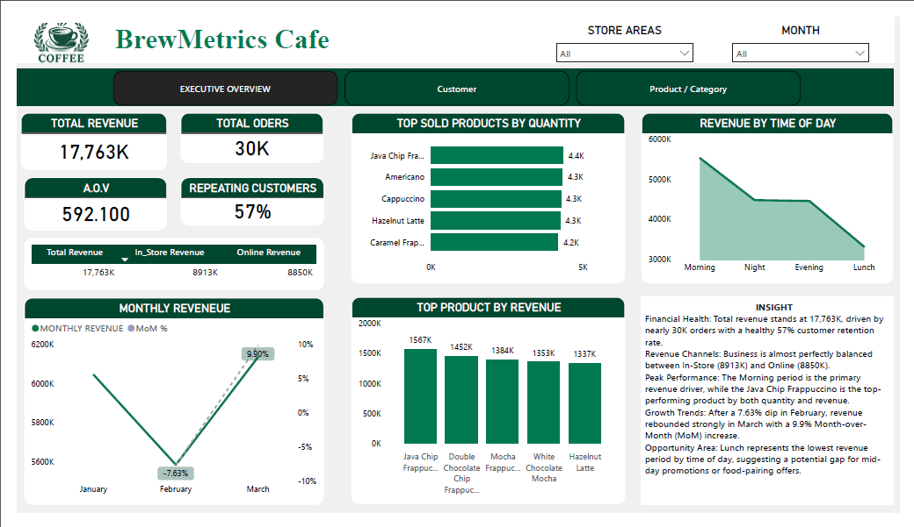
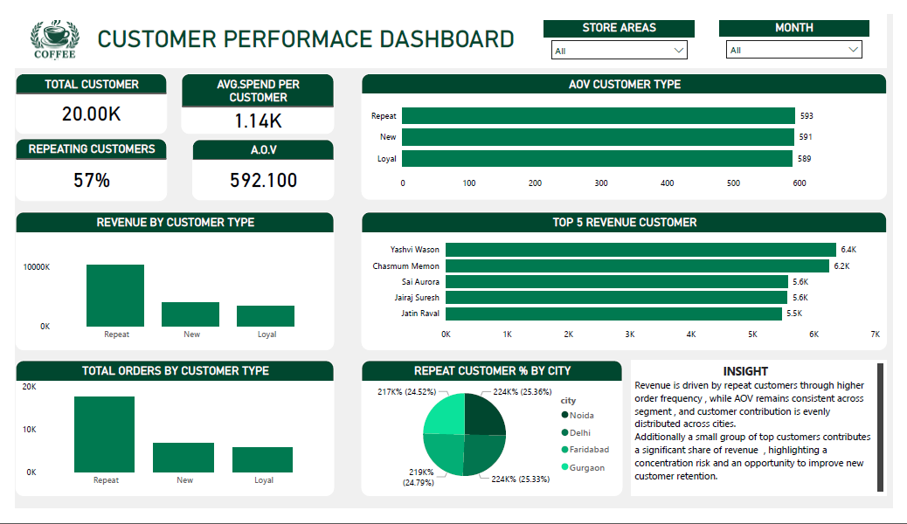
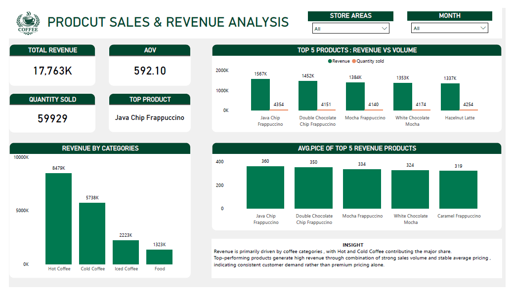

A comprehensive 3-page Power BI dashboard analysing BrewMatrics operations — uncovering revenue patterns, store performance, customer behaviour, and product insights across ₹17.763k in total sales.
Project Overview
BrewMatrics is a multi-page business intelligence dashboard built in Power BI to analyse the operational and financial performance of Starbucks India stores across a 3-month period (January–March).
The goal was to go beyond raw numbers — telling a data story that helps business stakeholders make decisions around product strategy, store expansion, customer retention, and revenue optimisation.
Every page answers a specific business question, with actionable insights surfaced directly on the dashboard.
Business Objectives
Dashboard Pages

Page 01
The Executive Dashboard provides a comprehensive overview of business performance through key metrics such as Total Revenue, Total Orders, Average Order Value (AOV), and monthly sales trends. This page helps stakeholders quickly evaluate overall business health and identify growth opportunities.

Page 02
The Customer Analytics dashboard focuses on customer behavior, purchasing patterns, and customer segmentation. It helps businesses understand customer preferences, customer lifetime value, and retention opportunities.

Page 03
The Product Analytics dashboard evaluates product performance across different categories. It highlights revenue contribution, sales volume, profitability, and identifies the products driving the highest business value.
Key Insights
Mall stores generate ₹11.1M vs ₹2.2M for Airport, Corporate, and Standalone — proving that footfall location is the biggest revenue lever.
The Morning period acts as the primary revenue generator for the cafe. Conversely, Lunch represents the lowest revenue period by time of day, highlighting a distinct gap where mid-day promotions or bundled food-pairing offers could drive traffic.
Top-performing products generate high revenue through a powerful mix of strong sales volume and stable average pricing rather than premium pricing alone. This points to consistent, high-volume customer demand for core favorites.
Revenue is driven by repeat customers through higher order frequency , while AOV remains consistent across segment , and customer contribution is evenly distributed across cities. Additionally a small group of top customers contributes a significant share of revenue , highlighting a concentration risk and an opportunity to improve new customer retention..
Revenue is primarily driven by coffee categories , with Hot and Cold Coffee contributing the major share. Top-performing products generate high revenue through combination of strong sales volume and stable average pricing , indicating consistent customer demand rather than premium pricing alone.
Revenue fell ~7% in February across all stores. This seasonal dip is predictable and could be countered with targeted February-specific campaigns.
Full Report
Dashboard
Tools & Skills Used
What I Learned
Breaking a complex dataset into 3 focused pages — each answering one business question — makes insights far more digestible for stakeholders than a single crowded view.
Writing DAX measures for AOV, repeating customer rate, and category revenue deepened my understanding of calculated columns vs measures and context transition.
Adding an INSIGHT text box on each page — summarising the "so what" — taught me that data dashboards must guide decisions, not just display numbers.
The Americano paradox (most ordered, lowest revenue) showed me why analysing both quantity and revenue together reveals insights that neither metric alone can surface.
I'm open to full-time roles and freelance projects in Data & Business Analytics.